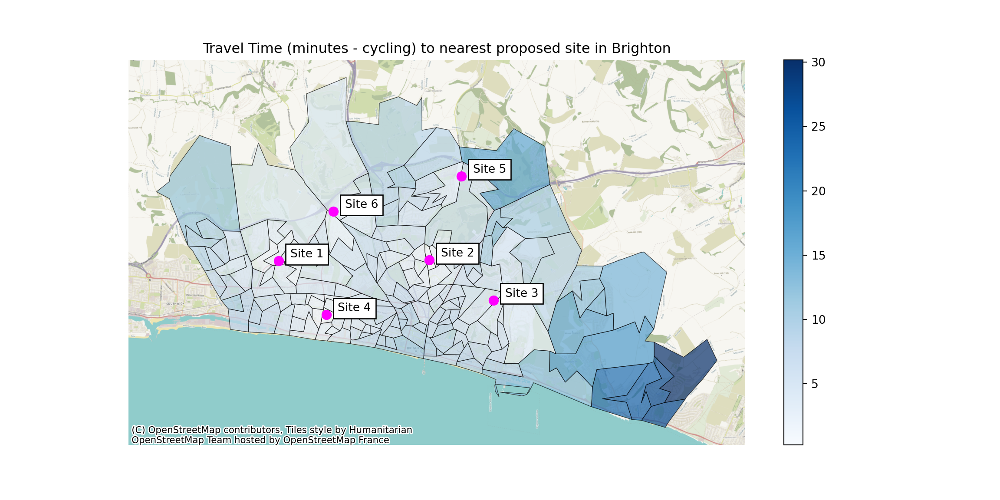

import routingpy as rp25 Lookup Up Travel Times Using APIs
The travel matrix we used in the previous section allowed us to do some great work, but it had a few key limitations:
- It didn’t cover every possible postcode of interest
- It only looked at journeys by car
- It assumed there was no traffic
- It was a few years out of date
To make truly equitable decisions for our service users, we will need to be able to generate appropriate travel time datasets for our analyses.
But can we do this without paying?
Warning
This is an area of the internet that seems to change frequently.
Sites which offered free tiers for routing often reduce the number of requests you can make on their free tiers, or remove them entirely.
Information here is accurate as of March 2024.
25.1 the routingpy library
“routingpy enables easy and consistent access to third-party spatial webservices to request…”
- route directions The time taken from one point to another point

- isochrones The distance from a given point that can be reached within different periods of time

- or time-distance matrices The time/distance from a range of points to a range of other points

https://pypi.org/project/routingpy/
25.1.1 Services supported by routingpy
routingpy currently includes support for the following services:
- Mapbox, either Valhalla or OSRM
- Openrouteservice
- Here Maps
- Google Maps
- Graphhopper
- OpenTripPlannerV2
- Local Valhalla
- Local OSRM
25.2 Openrouteservice
The free openrouteservice tier allows us to fetch large numbers of travel time source-destination pairs for free.

25.2.1 Setting up an account
You will need to set up an account with the openrouteservice.
No billing details are required! If you run out of daily requests, you just won’t be able to make any more requests until it resets.
When you have signed up, you will need to request a token.
Choose ‘standard’ from the dropdown and give it any name you like - perhaps “HSMA Training Token”.

From your dashboard you will then need your key.
25.3 Setting up a routingpy instance
Now we can set up a routingpy OpenRouteService (ORS) object that we can then use.
API = Application Programming Interface
Import routingpy using the alias rp
Store your key from the dashboard as a string.
We’ll then create an instance of the ORS API using our API key so we can retrieve travel times.
ors_api_key = "abc123myreallylongapikey"
ors_api = rp.ORS(api_key=ors_api_key)25.3.1 Getting a matrix with routingpy
We will often want to get a travel matrix out of our calls.
This is the sort of thing we were using in the first half of this session - rows of locations people will travel from and columns of places they are travelling to.
This is the most efficient way to gather the data we want for visualising travel times - and working out the optimal configuration for service locations, like we will be doing in the next session.
We will use the matrix method of our ors_api object.
Tip
We need to pass it a series of long/lat pairs
(yes - that IS the opposite to normal!)


Our call to routingpy will look something like this.
import routingpy as rp
ors_api = rp.ORS(api_key=ors_api_key)
example_matrix = ors_api.matrix(
locations = [[-0.195439, 50.845107],
[-0.133654, 50.844345],
[-0.107633, 50.83347],
[-0.176522, 50.83075],
[-0.119614, 50.865971],
[-0.172591, 50.857582],
[-0.141603, 50.825428],
[-0.138366, 50.826784],
[-0.144071, 50.822038],
[-0.151026, 50.823046]],
profile='driving-car',
sources=[0, 1, 2, 3, 4, 5, 6, 7],
destinations=[8, 9]
)This says the first 8 lists in the list of lists we’ve passed in as our locations should be treated as sources (where someone will start travelling from)
The last two should be treated as destinations (where people end up)
We’ve said we want to pull back driving times for a car (as opposed to heavy vehicles like lorries, which may need to take a different route and will drive slower).
And our output is a matrix of travel times in seconds.
Tip
Keep an eye on what time unit the output from the different routing services may be in.
Outputs from the OpenRouteService will be in seconds.

25.4 Constructing a routingpy request from scratch
But if you’re constructing your list of start and end points from scratch…
- How do you go about getting those start and end points from the kind of datasets you’ll have on hand?
- And how do you then turn the matrix into a nice reusable dataframe like the one we’ve worked with before?
25.4.1 Getting midpoints for our sources
What we’ll usually be starting with is a list of LSOA or MSOA objects.
However, routingpy can’t use LSOA names.
I need to have a lat/long coordinate pair for routingpy to work from…
You can get a csv from the ONS that contains the Northing/Easting midpoint of each LSOA.
The ONS like to work in Northings/Eastings (the British National Grid standard)

lsoa_centroids = pd.read_csv("https://github.com/hsma-programme/h6_3c_interactive_plots_travel/raw/main/h6_3c_interactive_plots_travel/example_code/england_lsoa_2011_centroids.csv")
# filter lsoa centroid file to just those with 'Brighton and Hove' in the name
brighton_lsoas_with_coords = lsoa_centroids[lsoa_centroids["name"].str.contains("Brighton and Hove")]And this is the output we get.
x and y are still Northings and Eastings.
But the ‘Geometry’ column is now in lat/long - which we can pull out when we get our list of coordinates for routingpy.

So let’s get that list for routingpy!
Tip
list(zip()) is a handy way of joining two lists into a list of tuples.
There’s a great explanation of zip here if you are interested: W3schools
We may want to also import some additional libraries at this point for our maps and dataframes.
import pandas as pd
import geopandas
import matplotlib.pyplot as plt
import contextily as cx
Click here to view the code up to now in a code cell
lsoa_boundaries = geopandas.read_file("https://github.com/hsma-programme/h6_3c_interactive_plots_travel/raw/main/h6_3c_interactive_plots_travel/example_code/LSOA_2011_Boundaries_Super_Generalised_Clipped_BSC_EW_V4.geojson")
lsoa_centroids = pd.read_csv("https://github.com/hsma-programme/h6_3c_interactive_plots_travel/raw/main/h6_3c_interactive_plots_travel/example_code/england_lsoa_2011_centroids.csv")
# filter lsoa centroid file to just those with 'Brighton and Hove' in the name
brighton_lsoas_with_coords = lsoa_centroids[lsoa_centroids["name"].str.contains("Brighton and Hove")]
# Turn this into a geodataframe
brighton_lsoas_with_coords_gdf = geopandas.GeoDataFrame(
brighton_lsoas_with_coords,
geometry = geopandas.points_from_xy(
brighton_lsoas_with_coords['x'],
brighton_lsoas_with_coords['y']
),
crs = 'EPSG:27700' # as our current dataset is in BNG (northings/eastings)
)
# Convert to lat/long from northings/eastings
brighton_lsoas_with_coords_gdf = brighton_lsoas_with_coords_gdf.to_crs('EPSG:4326')brighton_lsoas_with_coords_gdf.head() name code ... y geometry
24582 Brighton and Hove 031E E01016944 ... 103842.343 POINT (-0.12486 50.81905)
24584 Brighton and Hove 030B E01016945 ... 103974.651 POINT (-0.13056 50.82033)
24585 Brighton and Hove 031C E01016942 ... 104013.859 POINT (-0.12589 50.82061)
24587 Brighton and Hove 031D E01016943 ... 104356.378 POINT (-0.12009 50.82359)
24588 Brighton and Hove 010E E01016940 ... 106559.960 POINT (-0.14192 50.84376)
[5 rows x 5 columns]source_coord_pairs = list(zip(
brighton_lsoas_with_coords_gdf.geometry.x,
brighton_lsoas_with_coords_gdf.geometry.y
))
source_coord_pairs[(-0.12485753823882006, 50.819048361662844), (-0.13056244100324238, 50.82032983017193), (-0.12589355194632887, 50.82060753580127), (-0.12009009473097138, 50.82359460031993), (-0.1419226336322493, 50.84376216375269), (-0.13409304502020875, 50.821248647505946), (-0.1290923926268217, 50.825355308679825), (-0.12915413208995294, 50.82256816013763), (-0.06564658076883807, 50.82731305218065), (-0.0695024769329264, 50.8347318636462), (-0.059976211111144935, 50.83371488216074), (-0.12150138635379837, 50.82708101914926), (-0.1329495713758475, 50.82658850015205), (-0.09380238573178772, 50.84246429285842), (-0.18625900848163274, 50.83173641138352), (-0.11041719307402319, 50.8460760186744), (-0.18423523397145875, 50.82772977430711), (-0.12499824404508408, 50.842150940496325), (-0.1809502905047801, 50.847575173276056), (-0.12998190143087965, 50.840993772681244), (-0.16694242806106377, 50.846370039697376), (-0.12774777216725813, 50.84683643921986), (-0.17235580860764851, 50.85233110433831), (-0.13328719041625697, 50.84386834824081), (-0.17756331066974929, 50.84955116935465), (-0.11872874726801329, 50.84697681712633), (-0.16169805560774958, 50.8402143730416), (-0.1312199504612789, 50.8455493353371), (-0.17757727172317433, 50.841058880238464), (-0.10437944234132293, 50.85001672615681), (-0.18818108975876502, 50.827982021285216), (-0.11692778513528355, 50.842328834481535), (-0.18040233413328052, 50.83078925327021), (-0.10479626231873412, 50.82518809249197), (-0.11519685506058701, 50.82492870417449), (-0.1045745075649748, 50.83024530861581), (-0.12062039633327991, 50.81913927275517), (-0.11375207341006413, 50.81981626934199), (-0.17620279381881954, 50.83093615156643), (-0.1168360026433402, 50.817217346598), (-0.10660185370496056, 50.822675740443074), (-0.10654889450049333, 50.81921770717978), (-0.1253224359592905, 50.862614997857996), (-0.1341006949383844, 50.8637470936446), (-0.14395840433814644, 50.865334991000644), (-0.13262909366231845, 50.859362700395025), (-0.2218169523091122, 50.84602324144285), (-0.14938968057770885, 50.85805064205624), (-0.21891243327611368, 50.84833699101388), (-0.22569755461984312, 50.845653627240445), (-0.15071013534462616, 50.86284636948684), (-0.13961713173009138, 50.86001270650739), (-0.1277800972954319, 50.827615387488734), (-0.1281733570103867, 50.8295438896145), (-0.11767678918673502, 50.829435931206625), (-0.13065510488793108, 50.829966586206034), (-0.12314615691606148, 50.83000374006614), (-0.11854279358177934, 50.832431695722136), (-0.12324997536405718, 50.83593607100806), (-0.09004907533046928, 50.86947325784627), (-0.11210881397095855, 50.862709219996766), (-0.14607192019670698, 50.83478192989951), (-0.1400194332402897, 50.83596708448222), (-0.1377442889265768, 50.8429814450985), (-0.15043816756535106, 50.837839062076064), (-0.13614322459397413, 50.83945848371998), (-0.14084171671240953, 50.84015814748126), (-0.1398688844145735, 50.85606173061376), (-0.13636113241693637, 50.86775440644423), (-0.13738225259303458, 50.84594148578621), (-0.13836638268346113, 50.82678444028228), (-0.13976740002593266, 50.830671509590694), (-0.16523988983178853, 50.82550837839054), (-0.1541458987787279, 50.842853164516704), (-0.07127602539520848, 50.83826668958224), (-0.1470049379066287, 50.84518370787048), (-0.15710663294655672, 50.8431088280078), (-0.15507241265994365, 50.84835035770212), (-0.14512602792408524, 50.8473802039127), (-0.15860355391796555, 50.85458661919309), (-0.14719180100274945, 50.85165367327501), (-0.08226888889284063, 50.83668950364974), (-0.06490073343400923, 50.831788644975504), (-0.21067754046477774, 50.84141841897066), (-0.21332559373895793, 50.844659752151884), (-0.20912033985866324, 50.83381821430973), (-0.21488412497133563, 50.83368286705304), (-0.13658589021898626, 50.834890992293474), (-0.2207561690852315, 50.83878689101863), (-0.13180556089914922, 50.83608134639778), (-0.1276909146042563, 50.83543175901762), (-0.2167958508937541, 50.83760451122914), (-0.1826228150721126, 50.83795592893849), (-0.03314876914313422, 50.8106163637634), (-0.09747639385128438, 50.81215377012625), (-0.1538395486126238, 50.82369601528257), (-0.15102553259903334, 50.82304610152032), (-0.14407110422243075, 50.82203777681994), (-0.1498098597853527, 50.82613760910196), (-0.14923588240998484, 50.82846975142959), (-0.15201365161116284, 50.82732802479011), (-0.0414115135472561, 50.80835103080172), (-0.05018363226526975, 50.80459403277461), (-0.19929997052537266, 50.84648434983594), (-0.19362474649421155, 50.84811057116212), (-0.18919111627132676, 50.84810596589646), (-0.2027911637068509, 50.85113061699807), (-0.19667231146543004, 50.85253880137066), (-0.20109216750445794, 50.837787636953465), (-0.20007399386610988, 50.84101644942148), (-0.1235595937846924, 50.8334577846224), (-0.18860295777704653, 50.84370153729166), (-0.20145524120533262, 50.83379028804791), (-0.22494475331372493, 50.85439772552727), (-0.18737808391420763, 50.83533997516628), (-0.09689997606037115, 50.85645725742448), (-0.19289785984690608, 50.829743640978904), (-0.10502126697851809, 50.855039142997335), (-0.20607731873540647, 50.83103878204193), (-0.12045162915958503, 50.83900523613201), (-0.19402011405488123, 50.834791752779175), (-0.11572816373268986, 50.83919950975929), (-0.19984255061159545, 50.83031251299731), (-0.10861409970949898, 50.83964576640172), (-0.18052998912682677, 50.83371232148406), (-0.10300706900458345, 50.8413040862398), (-0.18087222834260502, 50.835218432648546), (-0.22804642218966026, 50.85090148176861), (-0.16749696305231418, 50.85875352556211), (-0.2125704583424967, 50.848689873904426), (-0.15958602593600418, 50.860218296290725), (-0.1522095361040432, 50.83091175861888), (-0.15712269909513552, 50.82863707305795), (-0.16185567328040282, 50.83158202772631), (-0.1536076433241225, 50.83295041951072), (-0.17409365307199323, 50.833107709797915), (-0.17118678987193864, 50.83388974720125), (-0.1615981234090788, 50.834367074501536), (-0.16757520950966337, 50.83205311227117), (-0.16897371372585, 50.8366789880835), (-0.19442343822678076, 50.84212541092397), (-0.13075822516255037, 50.83371069624895), (-0.14508837802001426, 50.830545916493584), (-0.13627164976828943, 50.831433871997056), (-0.06930394672138267, 50.81603184836857), (-0.1086372179189491, 50.81650429326761), (-0.038047624123997176, 50.803033758905315), (-0.14480656160477587, 50.828193057007276), (-0.14160291691485832, 50.82542830359792), (-0.168009968317264, 50.82877126910706), (-0.1773142548216743, 50.826228459697255), (-0.15665452413268832, 50.82639904292135), (-0.17154629986708017, 50.82938260986213), (-0.1598564230473934, 50.82675855881046), (-0.1635688622682595, 50.82799041870145), (-0.15681699404823815, 50.82413221338321), (-0.1606505763941083, 50.824573930908855), (-0.17434501313128775, 50.826482755868454), (-0.1698931054952474, 50.825644796237015), (-0.12429761878745428, 50.8323333636199), (-0.10617957465183359, 50.829518888937386), (-0.18876303149867757, 50.85162688392382), (-0.14765029084568077, 50.83373193254114), (-0.23091080420813107, 50.8536760009853), (-0.05824225196323413, 50.80743951288308)]This gives us a list of tuples.
But we want a list of lists…
So let’s just quickly convert that with a list comprehension.
source_coord_pairs_list = [list(coord_tuple) for coord_tuple in source_coord_pairs]
source_coord_pairs_list[[-0.12485753823882006, 50.819048361662844], [-0.13056244100324238, 50.82032983017193], [-0.12589355194632887, 50.82060753580127], [-0.12009009473097138, 50.82359460031993], [-0.1419226336322493, 50.84376216375269], [-0.13409304502020875, 50.821248647505946], [-0.1290923926268217, 50.825355308679825], [-0.12915413208995294, 50.82256816013763], [-0.06564658076883807, 50.82731305218065], [-0.0695024769329264, 50.8347318636462], [-0.059976211111144935, 50.83371488216074], [-0.12150138635379837, 50.82708101914926], [-0.1329495713758475, 50.82658850015205], [-0.09380238573178772, 50.84246429285842], [-0.18625900848163274, 50.83173641138352], [-0.11041719307402319, 50.8460760186744], [-0.18423523397145875, 50.82772977430711], [-0.12499824404508408, 50.842150940496325], [-0.1809502905047801, 50.847575173276056], [-0.12998190143087965, 50.840993772681244], [-0.16694242806106377, 50.846370039697376], [-0.12774777216725813, 50.84683643921986], [-0.17235580860764851, 50.85233110433831], [-0.13328719041625697, 50.84386834824081], [-0.17756331066974929, 50.84955116935465], [-0.11872874726801329, 50.84697681712633], [-0.16169805560774958, 50.8402143730416], [-0.1312199504612789, 50.8455493353371], [-0.17757727172317433, 50.841058880238464], [-0.10437944234132293, 50.85001672615681], [-0.18818108975876502, 50.827982021285216], [-0.11692778513528355, 50.842328834481535], [-0.18040233413328052, 50.83078925327021], [-0.10479626231873412, 50.82518809249197], [-0.11519685506058701, 50.82492870417449], [-0.1045745075649748, 50.83024530861581], [-0.12062039633327991, 50.81913927275517], [-0.11375207341006413, 50.81981626934199], [-0.17620279381881954, 50.83093615156643], [-0.1168360026433402, 50.817217346598], [-0.10660185370496056, 50.822675740443074], [-0.10654889450049333, 50.81921770717978], [-0.1253224359592905, 50.862614997857996], [-0.1341006949383844, 50.8637470936446], [-0.14395840433814644, 50.865334991000644], [-0.13262909366231845, 50.859362700395025], [-0.2218169523091122, 50.84602324144285], [-0.14938968057770885, 50.85805064205624], [-0.21891243327611368, 50.84833699101388], [-0.22569755461984312, 50.845653627240445], [-0.15071013534462616, 50.86284636948684], [-0.13961713173009138, 50.86001270650739], [-0.1277800972954319, 50.827615387488734], [-0.1281733570103867, 50.8295438896145], [-0.11767678918673502, 50.829435931206625], [-0.13065510488793108, 50.829966586206034], [-0.12314615691606148, 50.83000374006614], [-0.11854279358177934, 50.832431695722136], [-0.12324997536405718, 50.83593607100806], [-0.09004907533046928, 50.86947325784627], [-0.11210881397095855, 50.862709219996766], [-0.14607192019670698, 50.83478192989951], [-0.1400194332402897, 50.83596708448222], [-0.1377442889265768, 50.8429814450985], [-0.15043816756535106, 50.837839062076064], [-0.13614322459397413, 50.83945848371998], [-0.14084171671240953, 50.84015814748126], [-0.1398688844145735, 50.85606173061376], [-0.13636113241693637, 50.86775440644423], [-0.13738225259303458, 50.84594148578621], [-0.13836638268346113, 50.82678444028228], [-0.13976740002593266, 50.830671509590694], [-0.16523988983178853, 50.82550837839054], [-0.1541458987787279, 50.842853164516704], [-0.07127602539520848, 50.83826668958224], [-0.1470049379066287, 50.84518370787048], [-0.15710663294655672, 50.8431088280078], [-0.15507241265994365, 50.84835035770212], [-0.14512602792408524, 50.8473802039127], [-0.15860355391796555, 50.85458661919309], [-0.14719180100274945, 50.85165367327501], [-0.08226888889284063, 50.83668950364974], [-0.06490073343400923, 50.831788644975504], [-0.21067754046477774, 50.84141841897066], [-0.21332559373895793, 50.844659752151884], [-0.20912033985866324, 50.83381821430973], [-0.21488412497133563, 50.83368286705304], [-0.13658589021898626, 50.834890992293474], [-0.2207561690852315, 50.83878689101863], [-0.13180556089914922, 50.83608134639778], [-0.1276909146042563, 50.83543175901762], [-0.2167958508937541, 50.83760451122914], [-0.1826228150721126, 50.83795592893849], [-0.03314876914313422, 50.8106163637634], [-0.09747639385128438, 50.81215377012625], [-0.1538395486126238, 50.82369601528257], [-0.15102553259903334, 50.82304610152032], [-0.14407110422243075, 50.82203777681994], [-0.1498098597853527, 50.82613760910196], [-0.14923588240998484, 50.82846975142959], [-0.15201365161116284, 50.82732802479011], [-0.0414115135472561, 50.80835103080172], [-0.05018363226526975, 50.80459403277461], [-0.19929997052537266, 50.84648434983594], [-0.19362474649421155, 50.84811057116212], [-0.18919111627132676, 50.84810596589646], [-0.2027911637068509, 50.85113061699807], [-0.19667231146543004, 50.85253880137066], [-0.20109216750445794, 50.837787636953465], [-0.20007399386610988, 50.84101644942148], [-0.1235595937846924, 50.8334577846224], [-0.18860295777704653, 50.84370153729166], [-0.20145524120533262, 50.83379028804791], [-0.22494475331372493, 50.85439772552727], [-0.18737808391420763, 50.83533997516628], [-0.09689997606037115, 50.85645725742448], [-0.19289785984690608, 50.829743640978904], [-0.10502126697851809, 50.855039142997335], [-0.20607731873540647, 50.83103878204193], [-0.12045162915958503, 50.83900523613201], [-0.19402011405488123, 50.834791752779175], [-0.11572816373268986, 50.83919950975929], [-0.19984255061159545, 50.83031251299731], [-0.10861409970949898, 50.83964576640172], [-0.18052998912682677, 50.83371232148406], [-0.10300706900458345, 50.8413040862398], [-0.18087222834260502, 50.835218432648546], [-0.22804642218966026, 50.85090148176861], [-0.16749696305231418, 50.85875352556211], [-0.2125704583424967, 50.848689873904426], [-0.15958602593600418, 50.860218296290725], [-0.1522095361040432, 50.83091175861888], [-0.15712269909513552, 50.82863707305795], [-0.16185567328040282, 50.83158202772631], [-0.1536076433241225, 50.83295041951072], [-0.17409365307199323, 50.833107709797915], [-0.17118678987193864, 50.83388974720125], [-0.1615981234090788, 50.834367074501536], [-0.16757520950966337, 50.83205311227117], [-0.16897371372585, 50.8366789880835], [-0.19442343822678076, 50.84212541092397], [-0.13075822516255037, 50.83371069624895], [-0.14508837802001426, 50.830545916493584], [-0.13627164976828943, 50.831433871997056], [-0.06930394672138267, 50.81603184836857], [-0.1086372179189491, 50.81650429326761], [-0.038047624123997176, 50.803033758905315], [-0.14480656160477587, 50.828193057007276], [-0.14160291691485832, 50.82542830359792], [-0.168009968317264, 50.82877126910706], [-0.1773142548216743, 50.826228459697255], [-0.15665452413268832, 50.82639904292135], [-0.17154629986708017, 50.82938260986213], [-0.1598564230473934, 50.82675855881046], [-0.1635688622682595, 50.82799041870145], [-0.15681699404823815, 50.82413221338321], [-0.1606505763941083, 50.824573930908855], [-0.17434501313128775, 50.826482755868454], [-0.1698931054952474, 50.825644796237015], [-0.12429761878745428, 50.8323333636199], [-0.10617957465183359, 50.829518888937386], [-0.18876303149867757, 50.85162688392382], [-0.14765029084568077, 50.83373193254114], [-0.23091080420813107, 50.8536760009853], [-0.05824225196323413, 50.80743951288308]]25.4.2 Site locations
Then, I’ll want a series of site locations that I need to know the travel time to. We might have addresses or postcodes of these, but we need these in lat/long format.
In this case, I used Google Maps to find the Lat/Long of my sites of interest.
If you right click on a location, the coordinates will be given.

Click on them and they will be copied to your clipboard so you can paste them into your code.
Tip
If we instead had a large number of locations in postcode format, we could use the postcodes.io API to programmatically return the Lat/Long.
In this case, I’ve copied my locations from Google maps and formatted them as a list of lists.
locations = [
[50.84510657697442, -0.19543939173180552],
[50.844345428338784, -0.13365357930540253],
[50.833469545267626, -0.10763304889918592],
[50.83075017843111, -0.17652193515449327],
[50.865971443211656, -0.11961372476967412],
[50.85758221272246, -0.17259077588448932]
]However, when I copy them in, they will be in the order latitude/longitude - which is the wrong way around for Routingpy.
I could manually swap the order of each, or I could use another list comprehension to do this automatically. This is much more scalable.
locations_long_lat = [
[ x[1], x[0] ]
for x
in locations]
print(locations_long_lat)[[-0.19543939173180552, 50.84510657697442], [-0.13365357930540253, 50.844345428338784], [-0.10763304889918592, 50.833469545267626], [-0.17652193515449327, 50.83075017843111], [-0.11961372476967412, 50.865971443211656], [-0.17259077588448932, 50.85758221272246]]Now we just need to
- join our two lists into one
- specify which pairs are
- sources (where our people are)
- and which are destinations (where our people are going - the sites)
25.4.3 Joining our source and destination lists into one
# Create an empty list
all_coordinates = []
# Put our sources (our LSOA centre points) into the list
all_coordinates.extend(source_coord_pairs_list)
# Put our destinations (our potential sites) into the list
all_coordinates.extend(locations_long_lat)25.4.4 Specifying which pairs are sources and which are destinations
25.4.4.1 Sources
sources_indices = [i for i in range(len(source_coord_pairs_list))]
print(sources_indices)[0, 1, 2, 3, 4, 5, 6, 7, 8, 9, 10, 11, 12, 13, 14, 15, 16, 17, 18, 19, 20, 21, 22, 23, 24, 25, 26, 27, 28, 29, 30, 31, 32, 33, 34, 35, 36, 37, 38, 39, 40, 41, 42, 43, 44, 45, 46, 47, 48, 49, 50, 51, 52, 53, 54, 55, 56, 57, 58, 59, 60, 61, 62, 63, 64, 65, 66, 67, 68, 69, 70, 71, 72, 73, 74, 75, 76, 77, 78, 79, 80, 81, 82, 83, 84, 85, 86, 87, 88, 89, 90, 91, 92, 93, 94, 95, 96, 97, 98, 99, 100, 101, 102, 103, 104, 105, 106, 107, 108, 109, 110, 111, 112, 113, 114, 115, 116, 117, 118, 119, 120, 121, 122, 123, 124, 125, 126, 127, 128, 129, 130, 131, 132, 133, 134, 135, 136, 137, 138, 139, 140, 141, 142, 143, 144, 145, 146, 147, 148, 149, 150, 151, 152, 153, 154, 155, 156, 157, 158, 159, 160, 161, 162, 163, 164]25.4.4.2 Destinations
destinations_indices = [i for i in
range(
# first number in list of indices
# this will be 1 more than the number of sources (which were first in our
# full list of coordinates)
len(source_coord_pairs_list),
# last number in list of indices (remember the last number won't
# actually be included)
len(all_coordinates))
]
print(destinations_indices)[165, 166, 167, 168, 169, 170]25.4.5 Make the call to the ORS API via the routingpy library
And this is our final call to the API!
location_matrix = ors_api.matrix(
locations = all_coordinates, # remember this is sources first, then destinations
profile = 'driving-car',
sources = sources_indices,
destinations = destinations_indices,
metrics=["distance", "duration"]
)25.4.6 Exploring the travel matrix outputs
This is the duration output we get.

25.4.7 Converting the outputs into a dataframe
And then we can convert this to a dataframe like our previous matrices.

Click here for a copyable code example
brighton_travel_matrix = pd.DataFrame(
location_matrix.durations,
columns=[f"Site {i+1}" for i in range(len(destinations_indices))],
index=brighton_lsoas_with_coords.name
)
brighton_travel_matrix Site 1 Site 2 Site 3 Site 4 Site 5 Site 6
name
Brighton and Hove 031E 977.70 712.47 322.69 620.28 792.32 818.77
Brighton and Hove 030B 935.00 660.77 343.71 577.58 740.62 767.07
Brighton and Hove 031C 994.05 663.40 294.78 636.88 743.25 769.70
Brighton and Hove 031D 1078.25 642.41 185.75 771.88 722.26 864.58
Brighton and Hove 010E 694.25 205.64 407.75 619.50 284.52 469.89
... ... ... ... ... ... ...
Brighton and Hove 025A 1089.28 714.34 280.57 1100.54 794.20 875.62
Brighton and Hove 006D 217.98 703.21 926.92 454.12 444.53 251.57
Brighton and Hove 024A 555.77 432.37 436.69 380.93 507.96 331.42
Brighton and Hove 005A 571.01 883.03 1106.73 666.56 624.35 446.13
Brighton and Hove 033D 1110.69 1020.09 586.31 1208.32 828.12 897.03
[165 rows x 6 columns]We need to create a column to calculate the shortest possible travel time to any of the locations we have retrieved data.
Note that if the LSOA names are a column instead of an index, we will get an error as it will try to include the LSOA names when doing the minimum calculation.
This is why we set the LSOA names as the index in the previous step.
brighton_travel_matrix['shortest'] = brighton_travel_matrix.min(axis=1)We then need to modify this to join it to the geographic information (our LSOA boundaries) and convert it from seconds to minutes.
Note
We could convert the whole dataset to minutes instead by dividing all of the numeric columns in the dataframe by 60, not just a single column.
Tip
Remember - the output format of the df (geodataframe or standard pandas dataframe) will be determined by the type of the dataframe in the ‘left’ position.
nearest_site_travel_brighton_gdf = pd.merge(
left=lsoa_boundaries,
# We use the 'reset_index' method here to make the LSOA names a column again instead of an index
# This just makes it a bit easier to do the join
right=brighton_travel_matrix.reset_index(),
left_on = "LSOA11NM",
right_on = "name"
)
nearest_site_travel_brighton_gdf["shortest_minutes"] = nearest_site_travel_brighton_gdf["shortest"] / 60
nearest_site_travel_brighton_gdf.head() FID LSOA11CD LSOA11NM ... Site 6 shortest shortest_minutes
0 16356 E01016849 Brighton and Hove 026A ... 638.60 232.54 3.875667
1 16357 E01016850 Brighton and Hove 029A ... 616.75 294.41 4.906833
2 16358 E01016851 Brighton and Hove 029B ... 601.17 268.51 4.475167
3 16359 E01016852 Brighton and Hove 026B ... 579.76 256.04 4.267333
4 16360 E01016853 Brighton and Hove 026C ... 609.58 211.12 3.518667
[5 rows x 19 columns]25.4.8 Creating a map of the output
25.4.8.1 Creating a geodataframe of our sites
You might want to create a geodataframe of your sites
This will make it easy to then plot them
brighton_sites = geopandas.GeoDataFrame(
[f"Site {i+1}" for i in range(len(destinations_indices))],
geometry = geopandas.points_from_xy(
[i[1] for i in locations],
[i[0] for i in locations]
),
crs = 'EPSG:4326' # as our current dataset is in BNG (northings/eastings)
)
brighton_sites 0 geometry
0 Site 1 POINT (-0.19544 50.84511)
1 Site 2 POINT (-0.13365 50.84435)
2 Site 3 POINT (-0.10763 50.83347)
3 Site 4 POINT (-0.17652 50.83075)
4 Site 5 POINT (-0.11961 50.86597)
5 Site 6 POINT (-0.17259 50.85758)25.4.8.2 Making the map
nearest_site_travel_brighton_gdf["shortest_minutes"] = nearest_site_travel_brighton_gdf["shortest"] / 60
ax = nearest_site_travel_brighton_gdf.plot(
"shortest_minutes",
legend=True,
cmap="Blues",
alpha=0.7,
edgecolor="black",
linewidth=0.5,
figsize=(12,6)
)
hospital_points = (brighton_sites.to_crs('EPSG:27700')).plot(ax=ax, color='magenta', markersize=60)
cx.add_basemap(ax, crs=nearest_site_travel_brighton_gdf.crs.to_string(), zoom=14)
for x, y, label in zip(brighton_sites.to_crs('EPSG:27700').geometry.x,
brighton_sites.to_crs('EPSG:27700').geometry.y,
brighton_sites.to_crs('EPSG:27700')[0]):
ax.annotate(label, xy=(x,y), xytext=(10,3), textcoords="offset points", bbox=dict(facecolor='white'))
ax = ax.axis('off')
plt.title("Travel Time (minutes - driving) to nearest proposed site in Brighton")25.5 Getting different modes of transport with routingpy
By changing the ‘profile’ parameter, we can pull back travel matrices for different modes of transport.
location_matrix = ors_api.matrix(
locations = all_coordinates, # remember this is sources first, then destinations
profile = 'foot-walking',
sources = sources_indices,
destinations = destinations_indices,
metrics=["distance", "duration"]
)
Tip
You can look in the documentation to see the available travel methods. You will need to head to the ‘matrix’ section of the ORS documentation.
Note that the profile names - or the name of the relevant parameter - may vary if you are using a different service (like Google maps) through routingpy.
Here is the same map as before, but produced using the cycling profile.
Tip
You could consider writing a function so you don’t duplicate large amounts of code when changing the profile.
location_matrix = ors_api.matrix(
locations = all_coordinates, # remember this is sources first, then destinations
profile = 'cycling-regular',
sources = sources_indices,
destinations = destinations_indices,
metrics=["distance", "duration"]
)
brighton_travel_matrix = pd.DataFrame(
location_matrix.durations,
columns=[f"Site {i+1}" for i in range(len(destinations_indices))],
index=brighton_lsoas_with_coords.name
)
brighton_travel_matrix['shortest'] = brighton_travel_matrix.min(axis=1)
nearest_site_travel_brighton_gdf = pd.merge(
lsoa_boundaries,
brighton_travel_matrix.reset_index(),
left_on = "LSOA11NM",
right_on = "name"
)
nearest_site_travel_brighton_gdf["shortest_minutes"] = nearest_site_travel_brighton_gdf["shortest"] / 60
ax = nearest_site_travel_brighton_gdf.plot(
"shortest_minutes",
legend=True,
cmap="Blues",
alpha=0.7,
edgecolor="black",
linewidth=0.5,
figsize=(12,6)
)
hospital_points = (brighton_sites.to_crs('EPSG:27700')).plot(ax=ax, color='magenta', markersize=60)
cx.add_basemap(ax, crs=nearest_site_travel_brighton_gdf.crs.to_string(), zoom=14)
for x, y, label in zip(brighton_sites.to_crs('EPSG:27700').geometry.x,
brighton_sites.to_crs('EPSG:27700').geometry.y,
brighton_sites.to_crs('EPSG:27700')[0]):
ax.annotate(label, xy=(x,y), xytext=(10,3), textcoords="offset points", bbox=dict(facecolor='white'))
ax = ax.axis('off')
plt.title("Travel Time (minutes - cycling) to nearest proposed site in Brighton")
25.6 Things to know about routingpy
If you want to use a different routing service via routingpy, the process will be similar but the parameters may be slightly different. Check the docs for the service you’re interested in! https://routingpy.readthedocs.io/en/latest/?badge=latest#module-routingpy.routers
Routingpy is in the process of dropping support for ‘HereMaps’, which is another service with a free tier - and may drop support for more routing services that aren’t open source in the future… If something isn’t working, take a look at their github issues to see if it’s a known problem!
Different routing services will often report different figures for the same journeys…
ORS doesn’t have support for traffic data at present - so this can limit the accuracy of your outputs, particularly in urban areas. In comparison, Google Maps allows you to set the departure time, whether the traffic model is pessimistic, optimistic, etc.
The Valhalla provider has some level of support for public transport data via the ‘multimodal’ profile But it seems to lack rail data, and more investigation is needed to confirm how accurate it is overall.
One additional plus of routingpy is that you can link it into a local install (i.e. on your machine, or on a server within your organisation) and still use a similar syntax again
25.7 Full code example
The full start-to-finish code for this section is given below, allowing you to modify it for your own use.
Warning
If you need to request more than 2500 combinations (e.g. 250 LSOAs * 10 sites, or 100 LSOAs * 25 sites) then you will need to split your requests out into multiple requests to the ORS before rejoining the outputs into a single dataframe.
import pandas as pd
import geopandas
import routingpy as rp
import contextily as cx
import matplotlib.pyplot as plt
# This line imports an API key from a .txt file in the same folder as the code that is being run
# You could instead hard-code the API key by running
# ors_api_key = "myapikey"
# replacing this with your actual key, but you should not commit this to version control like Github
with open("routingpy_api_key.txt", "r") as file:
ors_api_key = file.read().replace("\n", "")
ors_api = rp.ORS(api_key=ors_api_key)
lsoa_boundaries = geopandas.read_file("https://github.com/hsma-programme/h6_3c_interactive_plots_travel/raw/main/h6_3c_interactive_plots_travel/example_code/LSOA_2011_Boundaries_Super_Generalised_Clipped_BSC_EW_V4.geojson")
lsoa_centroids = pd.read_csv("https://github.com/hsma-programme/h6_3c_interactive_plots_travel/raw/main/h6_3c_interactive_plots_travel/example_code/england_lsoa_2011_centroids.csv")
# filter lsoa centroid file to just those with 'Brighton and Hove' in the name
brighton_lsoas_with_coords = lsoa_centroids[lsoa_centroids["name"].str.contains("Brighton and Hove")]
# Turn this into a geodataframe
brighton_lsoas_with_coords_gdf = geopandas.GeoDataFrame(
brighton_lsoas_with_coords,
geometry = geopandas.points_from_xy(
brighton_lsoas_with_coords['x'],
brighton_lsoas_with_coords['y']
),
crs = 'EPSG:27700' # as our current dataset is in BNG (northings/eastings)
)
# Convert to lat/long from northings/eastings
brighton_lsoas_with_coords_gdf = brighton_lsoas_with_coords_gdf.to_crs('EPSG:4326')
source_coord_pairs = list(zip(
brighton_lsoas_with_coords_gdf.geometry.x,
brighton_lsoas_with_coords_gdf.geometry.y
))
source_coord_pairs_list = [list(coord_tuple) for coord_tuple in source_coord_pairs]
# Define site locations
locations = [
[50.84510657697442, -0.19543939173180552],
[50.844345428338784, -0.13365357930540253],
[50.833469545267626, -0.10763304889918592],
[50.83075017843111, -0.17652193515449327],
[50.865971443211656, -0.11961372476967412],
[50.85758221272246, -0.17259077588448932]
]
# Swap site locations into order expected by ORS/routingpy service
locations_long_lat = [
[ x[1], x[0] ]
for x
in locations]
# Create empty list to store all source and destination coordinates
all_coordinates = []
# Put our sources (our LSOA centre points) into the list
all_coordinates.extend(source_coord_pairs_list)
# Put our destinations (our potential sites) into the list
all_coordinates.extend(locations_long_lat)
sources_indices = [i for i in range(len(source_coord_pairs_list))]
destinations_indices = [i for i in
range(
# first number in list of indices
# this will be 1 more than the number of sources (which were first in our
# full list of coordinates)
len(source_coord_pairs_list),
# last number in list of indices (remember the last number won't
# actually be included)
len(all_coordinates))
]
# Request the travel times
location_matrix = ors_api.matrix(
locations = all_coordinates, # remember this is sources first, then destinations
profile = 'driving-car',
sources = sources_indices,
destinations = destinations_indices,
metrics=["distance", "duration"]
)
# turn the output into a dataframe
brighton_travel_matrix = pd.DataFrame(
location_matrix.durations,
columns=[f"Site {i+1}" for i in range(len(destinations_indices))],
index=brighton_lsoas_with_coords.name
)
# calculate the shortest travel time
brighton_travel_matrix['shortest'] = brighton_travel_matrix.min(axis=1)
# join travel data to geometry data
nearest_site_travel_brighton_gdf = pd.merge(
left=lsoa_boundaries,
right=brighton_travel_matrix.reset_index(),
left_on = "LSOA11NM",
right_on = "name"
)
# create column with shortest travel time in minutes (converted from seconds)
nearest_site_travel_brighton_gdf["shortest_minutes"] = nearest_site_travel_brighton_gdf["shortest"] / 60
# create geodataframe of site locations for plotting
brighton_sites = geopandas.GeoDataFrame(
[f"Site {i+1}" for i in range(len(destinations_indices))],
geometry = geopandas.points_from_xy(
[i[1] for i in locations],
[i[0] for i in locations]
),
crs = 'EPSG:4326' # as our current dataset is in BNG (northings/eastings)
)
# plot travel times as choropleth
ax = nearest_site_travel_brighton_gdf.plot(
"shortest_minutes",
legend=True,
cmap="Blues",
alpha=0.7,
edgecolor="black",
linewidth=0.5,
figsize=(12,6)
)
# plot potential hospitals/sites as point layer
hospital_points = (brighton_sites.to_crs('EPSG:27700')).plot(ax=ax, color='magenta', markersize=60)
# add basemap
cx.add_basemap(ax, crs=nearest_site_travel_brighton_gdf.crs.to_string(), zoom=14)
# Add site labels
for x, y, label in zip(brighton_sites.to_crs('EPSG:27700').geometry.x,
brighton_sites.to_crs('EPSG:27700').geometry.y,
brighton_sites.to_crs('EPSG:27700')[0]):
ax.annotate(label, xy=(x,y), xytext=(10,3), textcoords="offset points", bbox=dict(facecolor='white'))
# Turn off axis coordinate markings
ax = ax.axis('off')
# Add title to whole plot
plt.title("Travel Time (minutes - driving) to nearest proposed site in Brighton")
25.8 References
Routing and isochrone images from https://openrouteservice.org/services/